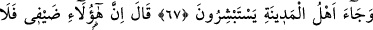
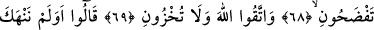
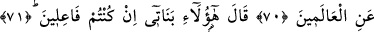
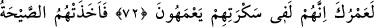
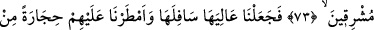
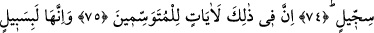
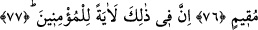
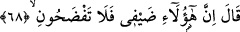

BENİ REZİL ETMEYİN
67. Şehir halkı, birbirlerini kutlayarak, (meleklerin yanına) geldiler.
68. (Lût) onlara: “Bunlar benim misafirimdir. Sakın beni utandırmayın;
69. Allah’tan korkun, beni rezil etmeyin!” dedi.
70. “Biz seni, elâlemin işine karışmaktan men etmemiş miydik?” dediler.
71. (Lût:) İşte kızlarım! (Düşündüğünüzü) yapacaksanız (onlarla evlenin), dedi.
72. (Rasûlüm!) Hayatın hakkı için onlar, sarhoşlukları içinde bocalıyorlardı.
73. Güneş doğarken onları o korkunç ses yakaladı.
74. Böylece ülkelerinin üstünü altına getirdik. Üzerlerine de balçıktan pişirilmiş
taşlar yağdırdık.
75. İşte bunda ibret alanlar için işaretler vardır.
76. Onlar hâlâ gözler önünde duran bir yol üzerindedirler.
77. Hakîkaten bunda îmân edenler için bir ibret vardır.
Lût (a.s.)’ın karısı, misâfirlerin güzel yüzlü olduğunu görünce kavmine haber
gönderdi. “Şehir halkı, birbirlerini kutlayarak (meleklerin yanına) geldiler.” Hâkimi
zulüm konusunda darb-ı mesel olan Sodom kenti sâkinleri, Lût (a.s.)’ın evinde son
derece güzel, yakışıklı, parlak yüzlü gençlerin konakladığı için sevinç içerisinde onun
evine geldiler.
Lût kavminin dört, bir görüşe göre yedi kenti vardı; En büyükleri Sodom’du. İbnü’l-
Cevzî’nin Diryâku’z-zünûb adlı eserine göre ise elli köydü.